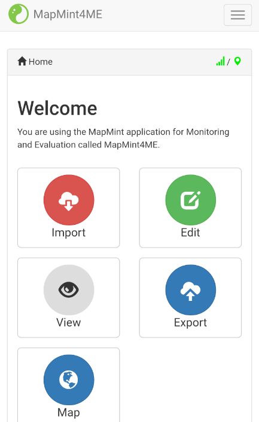

The MapMint4ME data collector¶
The MapMint4ME application is available on the Google Play Store™ at the following URL.
So, to setup MapMint4ME on your Android phone or tablet you can launch the Google Play Store™ on your device then search for mapmint4me. Once found, simply install it as any other Android application.
As presented in the screenshot below, after MapMint4ME installation ends you can start the application.
{kind=link}
Import¶
By clicking on the Import button from the MapMint4ME application, you can access the Import module. It is used to create the local copies of the 3 databses we have presented in introduction (configuration/dependencies, data to be recorded, and tiles).
As presented in the first screenshot below, the first time you access the Import there is no MapMint server configured yet. So, you should click on the Add Server button to acces the MapMint server settings, as shown in the second screenshot below.
{kind=link}
{kind=link}
In the MapMint server settings, you should define the follwing parameters:
Server Name: the server name that will appear in the list of available MapMint Server available from the “Import” and “Export” modules,
Server URL: the ZOO-Kernel URL associated with your MapMint Server,
Login: the user name you have defined previously allowing you to access the MapMint client table module online,
Password: the password used to authenticate your user.
In your case you are invited to set WS Server for the server name
and http://demo.mapmint.com/cgi-bin/zoo_loader.cgi for the
server URL. Finaly use your personal login and password prior to click
on the Add server button below the form.
Then you be redirected to the Import module where your server should now be listed, click on the Import button to start the production of the databases on the server side then download it to get it embedded within the application. Once you have pressed the Import button, you are first prompted to select the tiles you want to download locally on your Android device. Then, the process start on the server side and you are kept informed about the status of the ongoing service from the importer module. Once the production ends, the download of your local copy start. You should be able to follow progress of the database download from the notification bar of your Android device. Once the download ends, the message “Import success” should appear.
{kind=link}
{kind=link}
{kind=link}
You are now ready to go on the field to record data with or without internet connection.
Edit and View¶
As your first goal is the record new data, you should click on the Edit button, then select the table you want to use to load the dedicated edition form. Fill the form, take a picture and press the Use GPS position button. Then, press the save button to record your data on your local database.
{kind=link}
{kind=link}
{kind=link}
Once data have been successfuly stored locally, you can still access the elements you have already recorded. This first tool you may use is the Map module, it lets you visualize every record you have made (points, lines, and polygon). The second one, is the View module, it gives you access to the full informations your have recorded and let you modify one or multiple fields.
{kind=link}
{kind=link}
{kind=link}
Note that in case you are recording Lines or Polygons, you will have access to two version Export **
Once your data collection mission is over, by cliking on the Export button you access the Export module. From here, you can easily upload your recroded data back on the MapMint sever you have configured in the previous section. For doing so, you only need to press the Export button for the WS Server. Now, you should not have any of your recorded data left in your Android application and be able to access your data available on the MapMint server.
{kind=link}
{kind=link}
{kind=link}
Conclusion¶
At this step you shall be ready to go on the field and record data on your own. You are invited to go outside and record few data in the places nearby the workshop room. On signal, you will be invited to come back to the workshop room to go to the final section of this workshop where you will guided through the process of publishing MapMint projects dedicated to MapMint table client module.